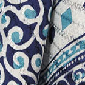
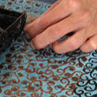
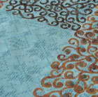
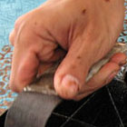
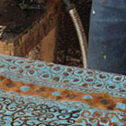
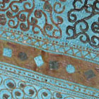

Click thumbnails to view larger photos. Check out the HTML here (view source). Then look at the JavaScript. See version 1 | See version 3
This is the finished batik textile.
Designs are applied to cloth with hot wax.
This fabric will be dyed again after the wax has all been applied.
The metal stamp has been laid in a try of liquid wax.
The manual process takes some time.
Some wax may be applied with a small drip stylus.
This cloth is waiting for the next dye cycle.
Hasan Batik is in Bandung, West Java, Indonesia.